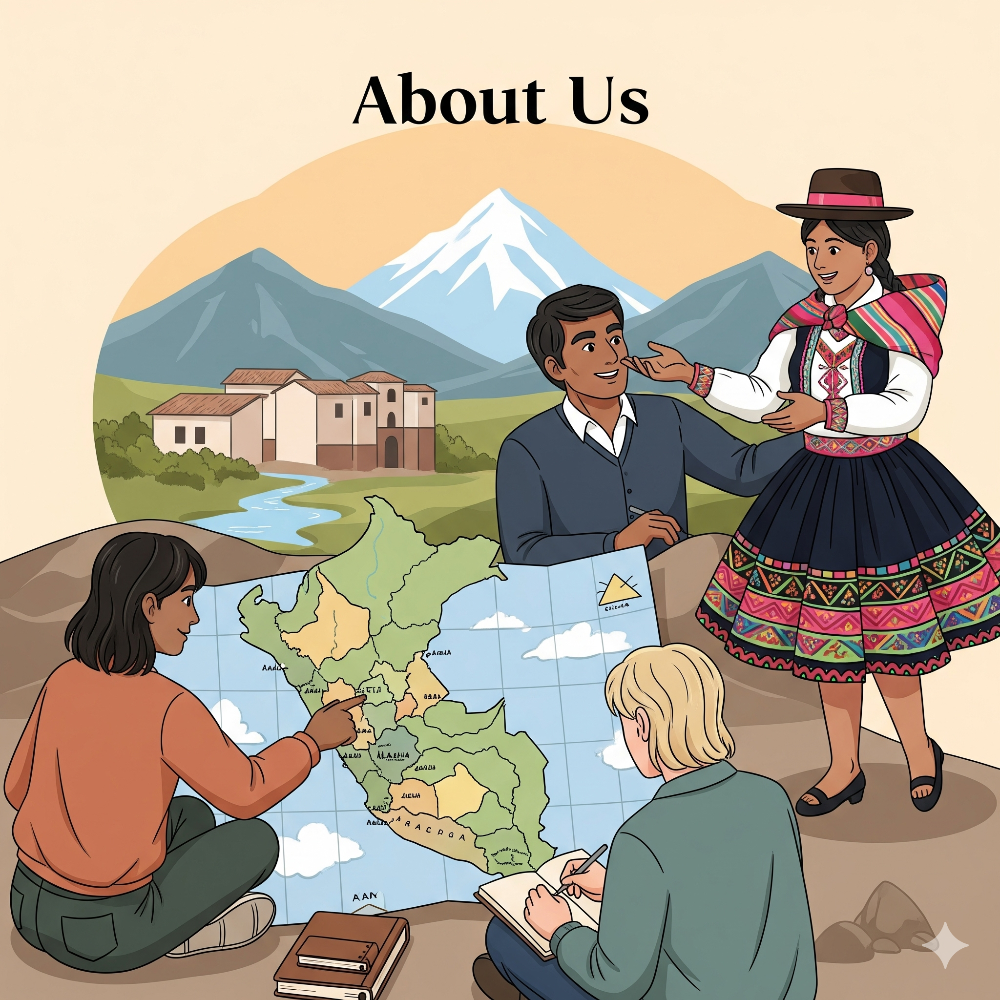

¡Bienvenido a nuestro hogar digital, donde cada clic te acerca a la magia de nuestro Perú!
Somos un grupo de entusiastas y amantes de la cultura peruana, unidos por la firme convicción de que las danzas de nuestro país son tesoros vivos que merecen ser compartidos con el mundo. Este proyecto nació de la pasión de porlas danza y por el rico y diverso folclore del Perú, una pasión que nos ha llevado a viajar, investigar y, sobre todo, a admirar el arte, la historia y la profunda identidad que cada danza lleva consigo.
Más que un simple portal, esta página es el resultado de un compromiso personal: el de ser un puente entre las raíces de nuestra nación y las nuevas generaciones. Cada artículo, cada video y cada imagen que encuentras aquí es el fruto de un trabajo dedicado a honrar a los guardianes de estas tradiciones: las comunidades, los bailarines y los músicos que mantienen vivo el legado ancestral de nuestra patria.
Creemos que al compartir estas historias, no solo difundimos el arte, sino que también fortalecemos el orgullo por lo nuestro. Te invitamos a ser parte de esta comunidad, a explorar con nosotros cada rincón de nuestra tierra a través del lenguaje universal de la danza.
